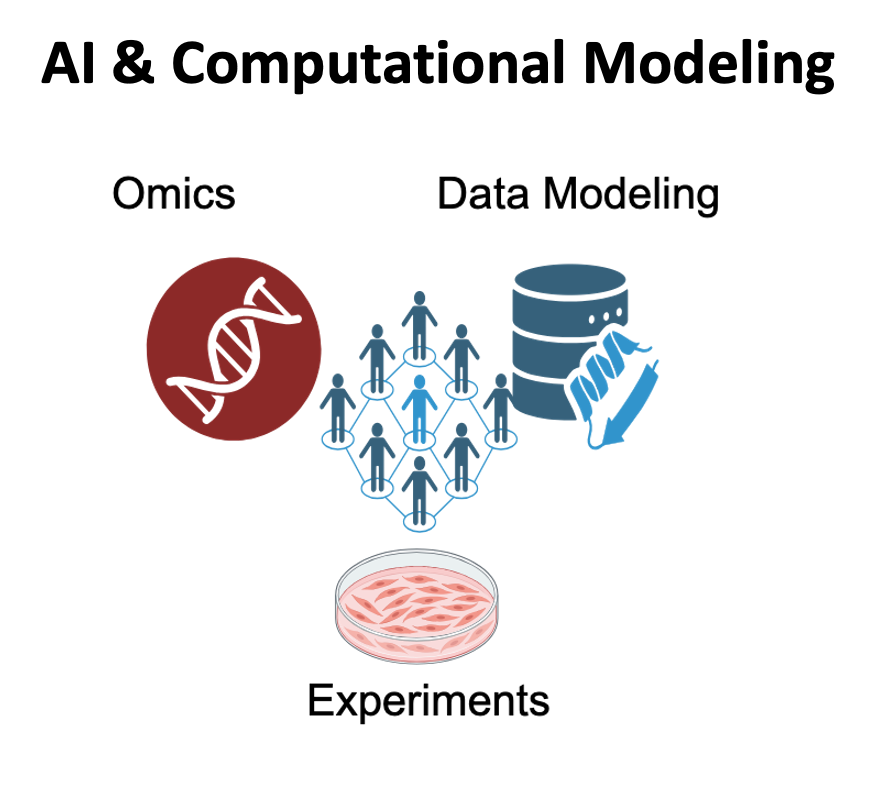

01 / AI & Computational Modeling
AI & Computational modeling for multiomics integration
Multiomics has become increasingly important in modern biological research, driven by the growing diversity of molecular measurements and the exponential increase in data volume. It encompasses transcriptomics, genomics, genetics, epigenomics, metabolomics, and proteomics at bulk, single-cell, and spatial scales. Rapid advances in single-cell and spatial multiomics offer unprecedented opportunities to understand complex biological systems. However, efficiently and accurately integrating these modalities and translating the resulting data into biological discoveries remain challenging. We develop advanced AI-based computational models to address these challenges.